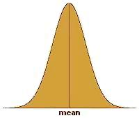
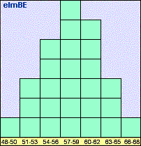
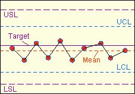

Statistical
Process Control (SPC)
Statistical Process Control (SPC)
is a system for monitoring, controlling, and improving a process through
statistical
analysis. It has many aspects, from control charting to process
capability studies and improvement. Nonetheless, the
over-all SPC system of a company may be broken down into four basic steps: 1)
measuring
the process; 2)
eliminating variances
within the process to make it consistent; 3)
monitoring
the process; and 4)
improving
the process. This four-step cycle may be employed over and over again
for continuous improvement.
Bulk
of SPC concepts in use today were developed based on the premise that
the process parameter being controlled follows a
normal distribution.
Any SPC practitioner must be aware that the parameter must first be
confirmed to be normal before being subjected to analysis concepts based
on normal behavior. Thus, any discussion on SPC must be preceded by a
discussion of what a normal distribution is.
The
Normal Distribution
The
normal
distribution
(see Fig. 1),
normal curve, or bell-shaped curve, is probably the most recognized and
most widely-used statistical distribution. The reason for this is
that many physical, biological, and social parameters obey the normal
distribution. Such parameters are then said to behave 'normally' or,
more simply, are said to be 'normal.' The
semiconductor
industry has many processes that output data or results that comprise a
normal distribution. As such, it is important for every process
engineer to have a firm grasp of what a normal distribution is.
Aside
from the fact that the normal distribution is frequently encountered in our
day-to-day lives, the mathematics governing normal behavior are fairly
simple. In fact, only two parameters are needed to describe a
normal distribution, namely, the
mean or its center, and the
standard
deviation
(also known as
sigma) or its variability. Knowing both parameters is equivalent to
knowing how the distribution looks like.
The normal
distribution is bell-shaped, i.e., it peaks at the center and tapers off
outwardly while remaining
symmetrical
with respect
to the center. To illustrate this in more tangible terms, imagine
taking down the height of every student in a randomly selected Grade 5
class and plotting the measurements on a chart whose x-axis corresponds
to the height of the student and whose y-axis corresponds to the number
of students.
|
 |
|
Figure 1.
The Normal Distribution |
What is
expected to emerge from this exercise is a
normal curve,
wherein a big slice of the student population will have a height that is
somewhere in the middle of the distribution, say 57-59 inches tall.
The number of students belonging to other height groups will be less
than the number of students in the 57"-59" category.
In fact, the
number of students decreases at a calculable rate as the height group
moves further away from the center.
Eventually you might find only one shortest student at, say, 48", and
one tallest student who probably stands at 66". Lastly, plotting the
number of the students falling under different height ranges of equal
intervals will result in a bell-shaped curve. Such a plot is called a
histogram,
a simple example of which is shown in Figure 2.
|
 |
|
Figure 2.
Example of a histogram of heights of students in a Grade 5
class; the
y-axis corresponds to the number of students per category
|
What's
notable about normal distributions is that
regardless of their standard
deviation value, the
% of data falling under a given
number
of
standard deviations is
constant. For example, say that
the standard deviation of process 1 is 100, and the standard deviation
of process 2 is 200. Process 1 and Process 2 will have different
data distribution shapes (Process 1 being more stable), but for both
processes, 66% of the data under the normal curve will fall within +/-
one (1) standard deviation
from the mean of the distribution (i.e., between
{mean - 1
sigma}
and
{mean + 1
sigma}),
and 37% of the data will be outside it. Table 1 shows the percentages of
data falling under different numbers of sigma.
Table 1.
% Data Falling Under Different Numbers of +/- Sigma
|
# of Sigma's |
% of Data Covered |
% of Data
Outside |
|
+/-
1 Sigma |
66% |
37% |
|
+/-
2 Sigmas |
95% |
5% |
|
+/-
3 Sigmas |
99.73% |
0.27% |
|
+/-
4 Sigmas |
99.9936% |
0.0063% |
|
+/-
5 Sigmas |
99.99995% |
0.00005% |
Skewed Distributions
Perfectly
normal curves are hard to come by with finite samples or data. Thus,
some data distributions that are theoretically normal may not appear to
be one once the data are plotted, i.e., the mean may not be at the
center of the distribution or there may be slight non-symmetry. If a
normal distribution appears to be 'heavy' or leaning towards the right
side of the distribution, it is said to be
skewed to the
left.
A normal distribution that's leaning to the left is said to be
skewed to the
right.
Many response
parameters encountered in the semiconductor industry behave normally,
which is why statistical process control has found its way extensively
into this industry. The objective of SPC is to produce data
distributions that are stable, predictable, and well within the
specified limits for the parameter being controlled.
In relation
to the preceding discussions, this is equivalent to achieving data
distributions that are
centered
between the
specified
limits,
and as narrow as possible. Good centering between limits and negligible
variation translates to parameters that are always within
specifications, which is the true essence of process control.
Control Charting
It is often
said that you can not control something that you do not measure.
Thus, every engineer setting up a new process must have a clear idea of
how the
performance
of this new process is to be
measured.
Since every process needs to satisfy customer requirements, process
output parameters for measurement and monitoring are generally based on
customer
specifications.
Industry-accepted
specifications are also followed in selecting process parameters for
monitoring.
Control
charting
is a widely-used tool for process monitoring
in the semiconductor industry. It employs
control
charts
(see Fig. 3),
which are simply plots of the process output data over time.
Before a control chart may be used, the process engineer must first
ensure that the process to be monitored is
normal
and
stable.
A process may
have several control charts - one for each of its major output
parameters. A new control chart must have at least the following:
the properly labeled x- and y-axes, lines showing the lower and upper
specification
limits
for the
parameter being monitored, and a line showing the
center
or
target
of these specifications. Once a control chart has been set up, the
operator must diligently plot the output data at predefined intervals.
After 30 data
points have been collected on the chart (may be less if measurement
intervals are long), the upper and lower control limits of the process
may already be computed.
Control
limits
define the boundaries of the
normal
behavior of the process. Their values depend only on the output
data generated by the process in the immediate past. Control limits are
therefore independent of specification limits. However, both sets of
limits are used in the practice of SPC, although in different ways.
The lower
control limit
LCL
and the upper control limit
UCL of
a process
may be calculated from the
mean
and
standard deviation
(or
sigma)
of the
plotted data as follows:
LCL = Mean
- (3 x Sigma);
UCL = Mean
+ (3 x Sigma).
Thus, the
span from the LCL of a process to its UCL is
6 sigma.
The
probability
of getting
points outside this +/- 3 sigma range is already very
low
(see
Table
1). Getting a measurement outside this range should therefore warn
an engineer that something abnormal is happening, i.e., the process may
be going
out of control.
This is the reason why these boundaries are known as 'control limits.'
Once the
control limits have been included on the control charts (also in the
form of horizontal lines like the specification limits), the operator
can start using the chart
visually
to detect anomalous
trends in the process that she would need to notify the engineer about.

Figure 3.
Example of a control chart showing data that are
slightly
off-centered, but nonetheless in control and within specs
For instance,
any measurement
outside
the control limits is an automatic cause for alarm, because the
probability of getting such a measurement is low. Four (4) or more
consecutively
increasing or decreasing points form a trend that is not normal, and
therefore deserves attention. Six (6)
consecutive
points on
one side
of the mean also deserve investigation. When such abnormalities are
observed, the process owner must take an action to bring the process
back to its normal behavior.
Control
limits must be
recomputed
regularly (say, every quarter), to ensure that the control limits being
used by the operator are reflective of the
current
process behavior.
Read more about:
Control Charting.
The
Process
Capability Indices
Being able to
monitor a process for out-of-control situations is one thing; knowing
how a process actually performs is another. Eyeballing
the centering and shape of a data distribution can give us quick, useful
information on how the corresponding process behaves, but it is not very
helpful in quantifying the process'
actual
and potential
performance. It is for this reason that statisticians have come up
with methods for expressing the behavior or capability of process
distributions in terms of single numbers known as
process capability indices.
Process
capability refers to the
ability of a process to meet
customer requirements or specification limits, i.e., how consistent its
output is in being within its lower and upper spec limits. A
process capability index should therefore be able to indicate how well
the process can meet its specs.
The
most basic process capability index is known as the simple process
capability index, denoted by 'Cp'.
Cp
quantifies the
stability of a process, i.e., the consistency of its output. As
mentioned earlier, the process capability indices discussed here presume
the
normality of the process. As such, the inconsistency of the
process may be measured in terms of the standard deviation or sigma of the output
data of the process. This is what Cp does - it uses the sigma to quantify the variation of a process,
and compares it against the distance between the upper spec limit (USL)
and lower spec limit (LSL) of the process. In mathematical form:
Cp = (USL
- LSL) / (6 x Sigma).
The
quantity
(USL - LSL)
is basically the range of output that the process must
meet,
while 6 sigma corresponds to
+/- 3 sigma
from the mean, or
99.73%
of all the process output
data. The smaller the value of 6 sigma, the narrower the
process output distribution is, denoting higher stability. Thus,
Cp increases as process
stability increases.
Thus, a process needs a
Cp > 1
to ensure that it is
narrow enough
to meet the spec range 99.73% of the time.
Although Cp
indicates the stability of a process, it has one major drawback that
makes it almost useless in the semiconductor industry. It does
not
consider the
centering
of the process distribution within the spec limits. A process with
a Cp of 100 may be very stable, with all its output data very close to
each other, but it may also be out-of-spec at all times, i.e., if it is
centered outside the spec limits!
This weakness
of Cp is addressed by another process capability index, Cpk.
Cpk measures how centered the output of the process is
between its lower and upper limits, as well as how variable the output is. Cpk
is expressed as the
ratio
of how far the
mean
of the output data is from the closer spec limit (the centering of the
process) to three times their
standard deviation
(the process variability).
CPL = (mean - LSL)
/ (3 sigma)
: process
capability index for single-sided (lower) spec limit
CPU = (USL -
mean) / (3 sigma)
: process
capability index for single-sided (upper) spec limit
Cpk = min{CPL,CPL}
: process capability index for two-sided spec limits
What these
formulae mean is this: Cpk is equal to whichever is
lower
between CPL
and CPU. If the mean of the process
data is closer to the lower spec limit LSL, then Cpk = CPL. If the mean of the process
data is closer to the upper spec limit USL, then Cpk = CPU.
An
ideal process is one whose output is always dead center between the spec
limits, such that the mean of its output data equals this dead center
and the standard deviation is zero. The
Cpk of this ideal process
is infinite (so is the Cpk of other processes whose sigma = 0, as long
as the LSL<mean<USL).
The
Cpk decreases if one or both of the following occurs:
1) the data become less centered; and 2) the data become
more variable
(sigma increases). Thus,
improving the process capability of a process entails one or both of: 1)
centering the output between limits and 2) decreasing the variation of
the output data.
The
essence
of SPC,
therefore, is being able to
recognize whether a low Cpk is
due to the mean
of the process or its sigma,
and taking the necessary actions to correct the problem, be it centering
of the data or making them less variable. In any process, the
actions needed to center the output data may be
different
from what needs to be done to make the data less variable.
Knowledge
of this basic SPC principle is therefore a necessary weapon in every
process engineer's arsenal.
As of this
writing, most semiconductor companies
target
a Cpk of
1.67
for
their processes, although they would be satisfied to
have
an actual Cpk of at least
1.33.
Everything, of course, depends on what spec limits the customer imposes
on the manufacturer. Still, at the end of the day it should always
be the manufacturer's goal to
center
their output between these spec limits as
consistently
as possible.
HOME
Copyright
© 2003-2005
EESemi.com.
All Rights Reserved.